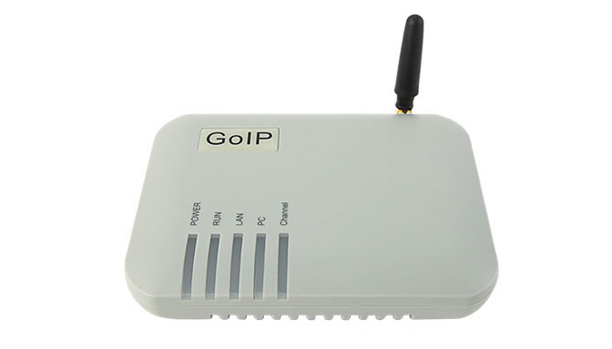
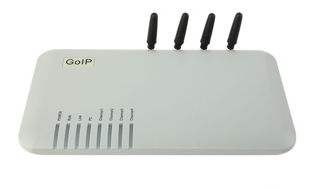
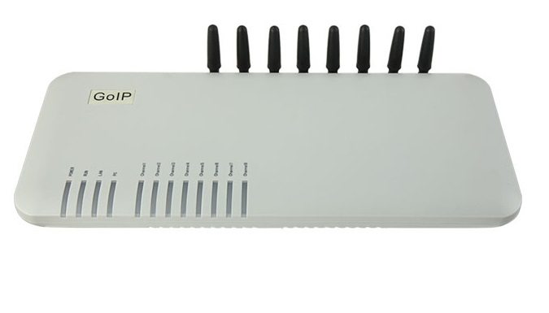

Купить GSM шлюз довольно просто
Это можно сделать, обратившись в ближайший магазин электроники или заказать в интернет-магазине. Важнее ответить на вопрос — как же его выбрать и какую модель приобрести. Для этого следует определить цели и масштабы потребностей. Какими возможностями обладают gsm шлюзы и в чем их разница.
К основным задачам данного устройства относится обеспечения помещения телефонной связью. GSM шлюз способен:
- Заменить стационарную связь при полном ее отсутствии;
- Заменить стационарную телефонную связь, если существующая не соответствует требованиям, ее использование не рентабельно;
- Создать условия использования мобильной сети в помещении, где много комнат и иметь один мобильный телефон не практично;
- Держать на постоянной связи несколько сотрудников одновременно.
Купить GSM шлюз появляется необходимость, когда нужно добиться таких задач:
- Снизить затраты на услуги телефонной связи.
- Получить широкий спектр коммуникационных возможностей, расширить их.
- Использовать функции GSM как простой мини АТС.
По сути, GSM шлюз является своеобразным переходником со стационарной сети на мобильную, GSM/DCS/3G. Его используют, когда есть необходимость создать условия для удобства совершения исходящих и приема входящих звонков в рамках мобильной сети. В таком случае, GSM шлюз купить просто необходимо, ведь данным приобретением решится масса проблем и повысится экономия, качество услуг связи. В условиях, когда возникают проблемы с основным провайдером телефонии, а это неотъемлемая часть рабочего процесса – GSM шлюз может быть применен как резервный канал связи. Подобно тому, как генератор обеспечивает электричеством во время отключения центральной электроэнергии, GSM шлюз позволит всегда оставаться на связи.
Наиболее востребованными по многим параметрам, являются устройства серии GoIP. Их преимущество заключается в сравнительно невысокой стоимости наряду с высоким качеством связи и множеством функций, позволяющих широкие возможности для интеграции с системами IP-телефонии.
Прежде, чем купить GSM шлюз, необходимо правильно рассчитать масштаб охвата коммуникаций на текущий момент, определить, что именно требуется получить от процесса интеграции данного устройства, а также важно предусмотреть возможность расширения. Если в планах увеличение нагрузки и объемов потребления связи, лучше заранее заложить данный факт в приобретение.
GSM шлюзы GoIP отличаются количеством слотов для SIM карт. Купить GSM шлюз можно с 1, 4 и 8 слотами (каналами) и более. Для этого необходимо выбрать устройство GoIP-1, GoIP-4 или GoIP-8 соответственно.
Расширенные функции GSM шлюза
Благодаря настройке расширенных возможностей шлюза можно подключить многоканальную связь, прием и рассылку текстовых сообщений и, разумеется, запись разговоров. В паре с IPАТС, шлюз имеет функцию автоответчика, голосового приветствия. Также доступны умная маршрутизация и любые виды переадресаций.
Удобно применять GSM шлюзы в ситуации, когда срочно необходимо оснастить удаленный объект связью. Это может быть пост охраны, новый офис, филиал, склад в отдаленном месте и т п.
В заключении хочется отметить, что возможности IP –телефонии на сегодняшний день предоставляют невероятно широкие просторы для создания максимально комфортных условий в работе и существенной экономии средств на услугах телефонной связи.
-

Характеристики GSM-шлюза GoIP-1:
GOIP 1 – это удобное устройство, помогающее осуществить качественную маршрутизацию звонков между GSM оператором и IP-сетью. Привлекательное решение, прежде всего, призвано соединить все удалённые офисы компании, обеспечивая стабильность и минимизацию расходов на мобильную связь, в том числе по междугородним и международным контактам. Это достигается непосредственно за счёт успешного применения ресурсов IP-телефонии. Этот недорогой GSM-шлюз обладает полноценным интерфейсом для коммутации к Интернету и локальной сети, таким образом, являясь универсальным вариантом в своём классе. Возможность установки в кратчайшие сроки.
-

Особенности шлюза GOIP-4:
Обеспечивает четыре GSM канала для IP телефонии, Поддерживает открытый стандарт SIP протоколы (IETF SIP V2), Поддержка SIP прокси режима, Режим группировки нескольких GoIP4, 210/100 Ethernet порта для LAN и дополнительных устройств, Поддержка четырёх диапазонов GSM 850/900/1800/1900 МГц, Поддержка VLAN и QoS, NAT, HTTP Web Идеальное решение для присоединения к GSM сетям Защита паролем входящих и исходящих GSM вызовов Передача GSM Caller ID на VoIP-терминал Динамический выбор кодеков Автоматическое прохождение NAT и firewall Функция эхоподавления микрофона Генерация комфортного шума при заполнении VAD-пауз между репликами
-

Восемь SIM карт в шлюзе GOIP-8:
Широкополосный VoIP-GSM-шлюз рассчитан на работу по восьми каналам и призван обеспечивать качественную связь между сетями GSM и IP. GoIP 8 обладает поддержкой SIP - протокола и успешно работает с подавляющим большинством IP АТС наиболее популярных производителей. Такие характеристики позволяют быстро и с минимальными затратами телефонизировать любой офис. Ещё одним из достоинств VoIP-GSM шлюза является ощутимая экономия затрат на междугородную и международную телефонную связь. Это обусловлено поддержкой шлюзом функции оптимальной маршрутизации вызовов. Устройство имеет довольно компактные габариты и лаконичный дизайн. Питание шлюза осуществляется через адаптер 220/12В.